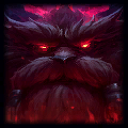
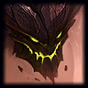
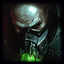
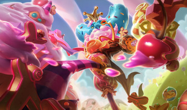
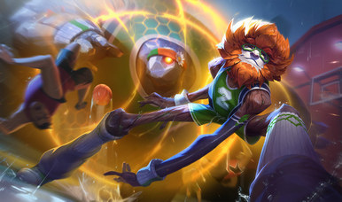
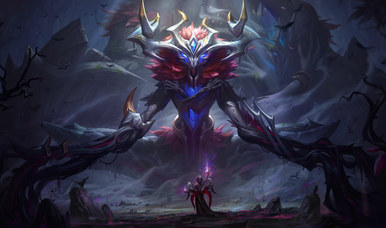
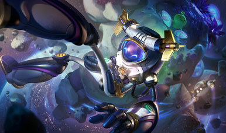
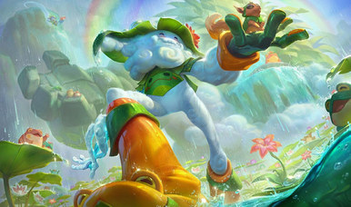

10
Cumplelolero · 5 sep 2016
IVERN10 AÑOS
El Padre Verde
Jungla · Espíritu · Ionia
El dato más chistoso
Los números
se alinean solos
En el juego
10
AÑOS
CONTRA
En el lore
10 000
AÑOS
Cumple diez años en la Grieta y tiene casi diez mil en su historia.
El lore más oscuro de la serie

Antes se llamaba
Ivern el Cruel
1
Era un señor de la guerra del Freljord
2
Navegó al este con su clan buscando la tierra de donde fluye toda la magia, para quedarse con ese poder
3
Llegó a Ionia y arrasó una docena de asentamientos costeros
4
Mató a todo el que se le puso enfrente
Omikayalan · el Corazón del Mundo
Encontró un árbol
de hojas doradas
Se dio cuenta de que los vastayas se dejarían matar por ese árbol. Así que para romperles la moral…
Lo taló a hachazos
hasta tirarlo
hasta tirarlo
Y cayó
Cuando el árbol cayó, Ivern el Cruel cayó con él.
Lo que salió de ahí
Ivern el Cruel
señor de la guerra
→
El Padre Verde
platica con el bosque
1
Su cuerpo se volvió corteza y hojas, y empezó a oír llorar a la tierra
2
Entendió lo que había hecho y se quedó pidiendo perdón durante eones
3
Lo único que le queda de su vida pasada son los cuernos, que parecen un casco viejo del Freljord
Quedó a cargo del legado del árbol que él mismo mató: ahora su trabajo es cuidar justo lo que fue a destruir.
El one trick #1 del mundo
JAMICAN BANANA
#NA1
Norteamérica · nivel de invocador 1 640 · 81% jungla
60% de winrate · 556 partidas
S2026
Grandmaster
S2025
Grandmaster
S2024 S3
Challenger ◄
S2024 S2
Grandmaster
S2024 S1
Challenger ◄
S2023 S2
Challenger ◄
#333
de Norteamérica
Pico de Challenger esta temporada. El top 0,02% del servidor.
Los one tricks de la serie
Los puntos de maestría
no miden nada
Challenger
Diamante
Esmeralda
Plata
Bronce

Ornn
Blitzcrank

Malphite
Urgot
7 M de puntos18 M
La de Janna no aparece: no juega ranked, así que no hay dónde ponerla.
El que menos puntos tiene es el único Challenger. Y el de casi dieciocho millones está en Plata.
El dato que nos toca
Dos de los seis mejores
son latinos
#5
UnArbolitoAzul #Daisy
LAS
6 050 592
#6
Prometheus009
LAN
5 670 850
«Un Arbolito Azul»
El quinto mejor Ivern del planeta se llama así, en español. Un respeto para ese cabrón.
Diez años de skins
Seis skins,
y todas al mismo precio

Rey de las Golosinas 1350 RP
Rey de las Clavadas 1350 RP
Dios Antiguo 1350 RP
AstroIvern 1350 RP
Pastor de Lluvias 1350 RP
Cero legendarias
Cero definitivas
Cero prestigio
~52 USD
las cinco · 6 750 RP · 3,2 días de salario
El mismo pedo que Ornn, que fue el primer video de esta serie.
Diez años del Padre Verde
Feliz cumpleaños,
arbolito
GIGI EASY
Tírenme un follow o les voy a meter la cuarta. Chao.